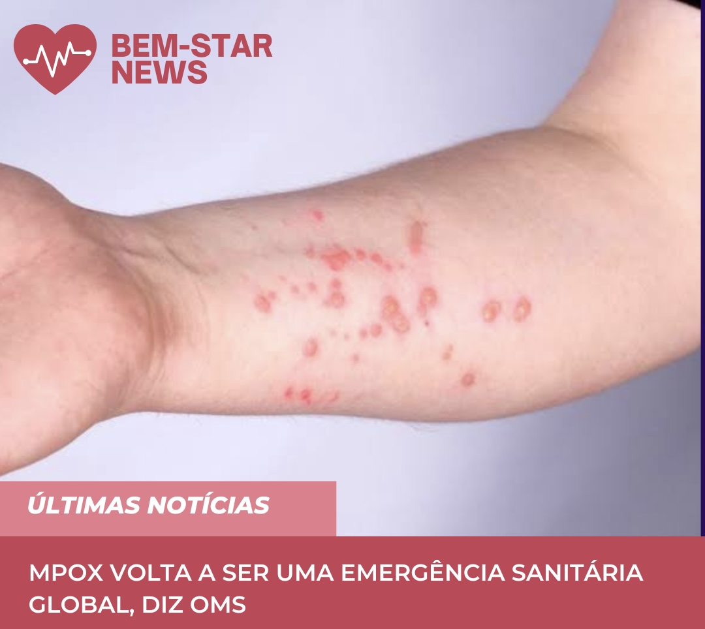

Bem-Star
Home
Lista de Epidemias
Glossário Epidemiológico
Perguntas Frequentes
Últimas Notícias
Saiba mais:
https://agenciabrasil.ebc.com.br/saude/noticia/2024-09/surto-recente-de-febre-oropouche-foi-causado-por-nova-linhagem-viral
Saiba mais:
https://agenciabrasil.ebc.com.br/saude/noticia/2024-10/surto-de-marburg-em-ruanda-ja-matou-11-pessoas
Saiba mais:
https://www.gov.br/saude/pt-br/assuntos/noticias/2024/outubro/ministerio-da-saude-reforca-compromisso-global-no-combate-a-meningite

Saiba mais:
https://g1.globo.com/saude/noticia/2024/08/14/mpox-emergencia-sanitaria-global-tire-duvidas-em-10-topicos.ghtml